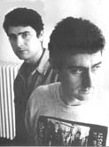

 Duo
donostiarra que subtitulan y .
Ambos se formaron en la escuela pop de los 80´,
masterizando la nueva ola
entre sus licenciaturas de Magisterio y Periodismo.
"Mogollón" o "Iguales
y tu" pertenecen a sus primeros pasos, reuniendose
en "Sanchis y Jocano" a finales del 84.
Se estrenan con un maxi sellado con la
multinacional Ariola al año
siguiente,
meses después visten de largo su discografia particular
bajo el mecenazgo de
los navarros Nola.
"Crónica de San Sebastián"
es su reflejo pop de autor, que suscriben en centenares de escenarios.
Otro maxi prologa la edición de "Entre
lo prohibido y lo limitado", album para Basati Diskak del 91.
Folkis en estado rock, consolidan su creatividad con "A la clandestinidad"
en los estudios IZ.
Abren su catálogo acústico con "La
historia nos absolvera", de Galerna.
Y reciben el milenio con "Pastis y Cinzano", vena pop-rock firmado
po GP.
Volver